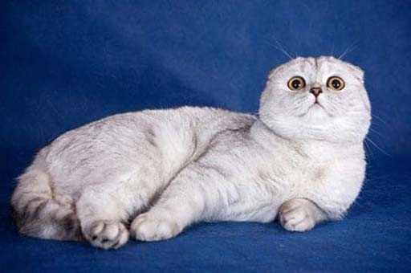

Характеристики кошек
Тут вы узнаете характеристики котиков
и так же подробную информацию

Мейн-кун
Рост: 1 м
Высшая классификация: Кошка
Масса: Самец: 5,9 – 8,2 кг,
Самка: 3,6 – 5,4 кг
Средний возраст: 12,5 лет
Происхождение:Америка
Больше информации
Персидская
Рост: 25 - 38 см.
Высшая классификация: Кошка
Масса: Самец: 5 – 7 кг ,
Самка: 3,8 – 5 кг
Средний возраст: 13,5
Происхождение: Древняя Персия
Больше информации 
Шотландская вислоухая
Рост: 55 см.
Высшая классификация: Кошка
Масса: Самец: 4 – 5 кг,
Самка: 3 – 5 кг
Средний возраст: 15
Происхождение: Шотландия
Больше информации
X
Дополнительная информация
Все котики мейн-кун имеют прикольные кисточки на ушках. Котята при рождении большие, больше всех остальных ушастиков.
Шерсть у кошки длинная, а главное мягкая как шелк, так и хочется потискать.
Могут быть любого цвета, а также может быть грива как у льва на шее и со стороны кажется что перед вами царь комнаты.
Здоровые и главное выносливые, из-за шерсти могут находиться на холоде что позволит погулять по снегу,
но мне кажется это плохая идея.
X
Дополнительная информация
Очень капризные и непреклонные.Но при этом бесконфликтный и не подверженный к нападению,
спокойные редко подают голос,а если хотят внимания то пристально смотрят на вас.
Имеется около 100 видов этих кошек по окраске.Встречаются черные, белые, серые,
голубые.специфические черты породы маленький, широкий и вздёрнутый нос.
Одна из самых сложных по уходу.Эти кошки сопят из-за носика, но разве это не мило.
X
Дополнительная информация
Котик средней величины, не худощав по кличке "Вася". Шерсть короткая, пышная, приятная.
Окрас может быть самым всевозможным.
Подвержен скрутке, также подвержен кардиомиопатии. Голос кошки непростой,на первый взгляд, немного скрипуч.
Умеет стоять на задних лапах прям как сурикаты. Спят на спине.


{kind=link}
{kind=link}
{kind=link}